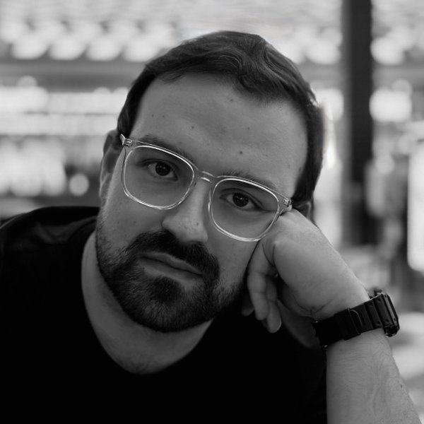

Investigação
- Espectroscopia de campo integral
- Cinemática estelar
- Populações estelares
- Galáxias anãs
- Matéria escura

Investigador de Pós-Doutoramento · Swinburne University of Technology
Astrofísico observacional. Estudo as galáxias mais pequenas e mais dominadas por matéria escura do Universo.
Sou Investigador de Pós-Doutoramento no Centre for Astrophysics and Supercomputing (CAS) da Swinburne University of Technology, em Melbourne, onde integro a equipa AGATE (Analysis of Galaxies At The Extremes). Sou também colaborador do Instituto de Astrofísica e Ciências do Espaço (IA), no Porto.
Estudo as galáxias mais pequenas e mais dominadas por matéria escura do Universo. Estes sistemas ténues são laboratórios naturais para perceber como a matéria escura se comporta e como as galáxias se formam nas massas mais baixas. Trabalho sobretudo com espectroscopia de campo integral, em particular com o MUSE no Very Large Telescope e o KCWI no Observatório Keck, onde participei em propostas e campanhas de observação. Trabalhei também com outras infraestruturas, como o ALMA e o UVIT do AstroSat, entre outras.
No centro do meu trabalho está uma pergunta simples: quão pequena pode ser uma galáxia, e o que a mantém unida?
Melbourne, Australia
Investigador de Pós-Doutoramento
Centre for Astrophysics and Supercomputing · equipa AGATE
Porto, Portugal
Doutoramento em Astronomia
Tese: The Life and Death of the Darkest Galaxies · Orientador: Jarle Brinchmann
Porto, Portugal
Mestrado em Astronomia e Astrofísica